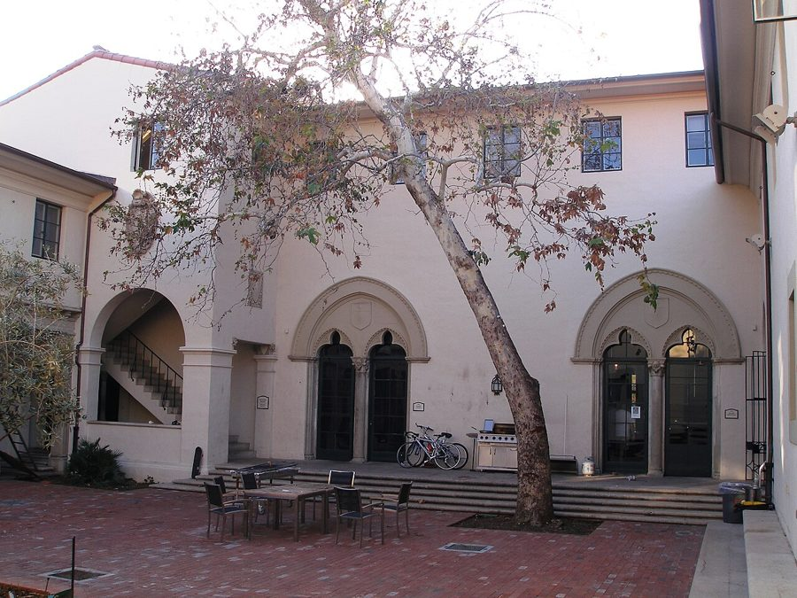
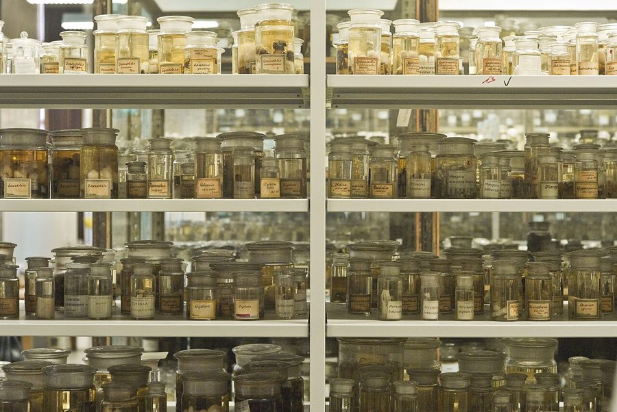
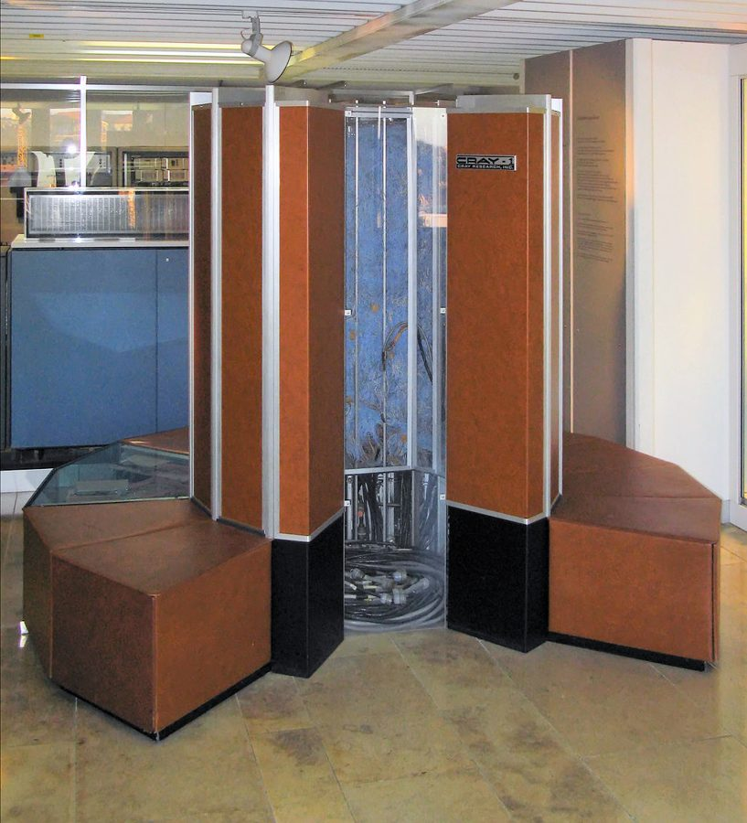
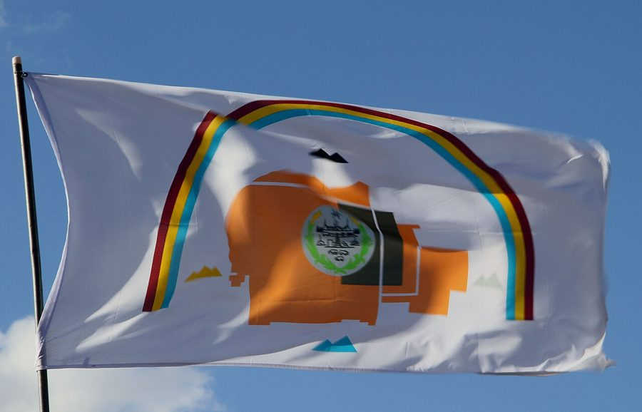
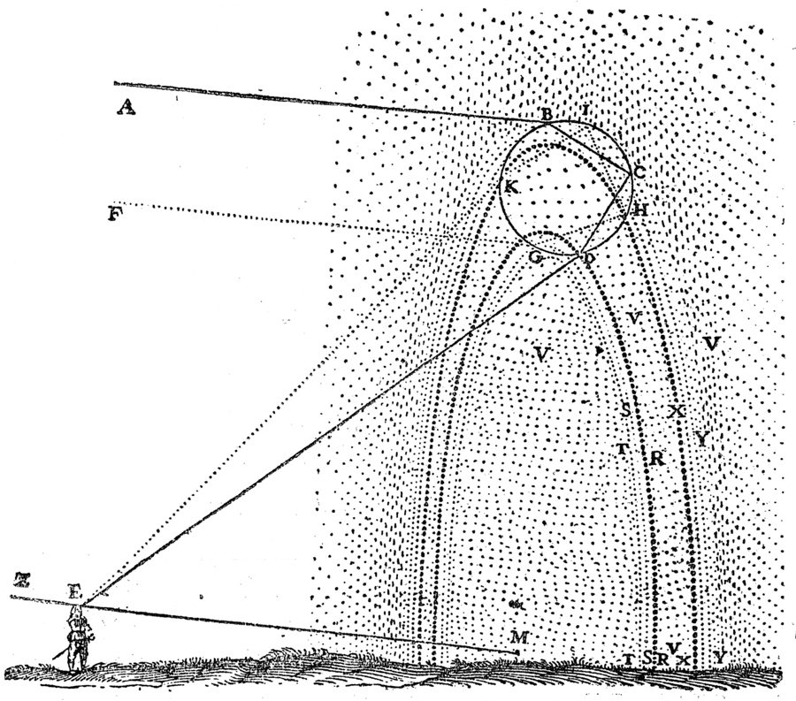

这一章在做什么
书名出在这一章。前半章是两件带喜剧味的事：Constantine 拉作者改做计算机「格点」计算；两人去看一个和几百只蜘蛛同住的本科生。后半章作者在彩虹下遇到费曼，那几句对话是全书的核心。
读的时候留意作者心里的秤：一头是时髦、好找教职的路，一头是自己到底喜欢什么。
雨后的彩虹（奥地利格拉茨，2010 年）。亮的那道是主虹，外面淡的那道是副虹。书里那天帕萨迪纳也是下了一夜雨、傍晚放晴。
Dnalor 01，CC BY-SA 3.0 at，维基共享资源
背景：作者默认你知道的事
先交代一件前情：第 13 章作者追问费曼对弦理论的看法，把费曼惹火了，被训了出来。所以这一章他说自己这几天一直在找机会「偶遇」费曼，想知道对方还理不理他。
这一章的三场戏
① 橄榄道上
Constantine 劝作者
跟他做计算机格点
② 本科生宿舍
几百只蜘蛛，没有床
是费曼叫作者来看的
③ 回物理楼的路上
费曼在看彩虹
问作者：你小时候爱科学吗
中间第 9–13 段是插进来的回忆：邻居 Ray 谈计算机
本站示意图。三场戏问的是同一个问题：一个人该拿什么当自己的事。
康斯坦丁 Constantine 博士后，名字改过。来自雅典，穿着讲究，日子过得潇洒。做格点计算，这一章想拉作者入伙。
蜘蛛哥 Spider Guy 加州理工的本科生，书里没给名字，这是作者起的外号。
Ray Ramon 作者的邻居，开垃圾车的，名字改过。这一章只在回忆里出现。
Meg Meg Constantine 的女友，名字改过。只被提到，没出场。
施瓦茨 John Schwarz 真人真名。在加州理工坚持做弦理论的人，这里被 Constantine 拿来开玩笑。
Murray Murray Gell-Mann 盖尔曼。只在第 42 段的一段插叙里出现。
本科生宿舍，和「加州理工没几个女生」

加州理工的本科生宿舍 Blacker House 的院子，2008 年。书里没说蜘蛛哥住哪一栋，这张只是让你知道那里的宿舍长什么样。
Antony-22，CC BY-SA 3.0，维基共享资源 美国大学管宿舍叫 dorm（dormitory），加州理工的本科生宿舍叫 House，几栋老楼就在橄榄道（Olive Walk）边上。这所学校 1970 年才开始招本科女生，故事发生时女生仍然很少。第 26 段作者的惊讶从这里来。

柏林自然博物馆的蜘蛛标本收藏。蜘蛛哥的版本是活的，装在塑料杯里。
Hannes Grobe/AWI，CC BY 3.0，维基共享资源
一只捕鸟蛛的腹面。书里那句 hairy spiders 说的就是这一类。
George Chernilevsky，公有领域，维基共享资源
菲亚特、杂志封面和 Pam
Fiat （菲亚特）是意大利车，那些年在美国以爱抛锚出名，美国人把 FIAT 戏解成 Fix It Again, Tony 。
Cosmopolitan 是女性时尚杂志，Cigar Aficionado 是 1992 年才创刊的雪茄杂志，封面多是派头十足的男人；作者是拿写书时读者熟悉的东西打比方。
Pam 是美国厨房里常见的喷雾食用油，喷在锅上防粘。
HAL、Bellevue 和 1981 年的计算机

Cray-1 超级计算机，陈列在慕尼黑的德意志博物馆。1976 年问世，是那几年最快的机器。当年说「用计算机解方程」，指的是这种东西。
Clemens PFEIFFER，CC BY 2.5，维基共享资源 HAL 是 1968 年的电影《2001 太空漫游》（2001: A Space Odyssey）里飞船上的计算机，会说话，后来对船员下了手。
Bellevue 在华盛顿州，紧挨西雅图，当时微软就设在那里。第 12 章说过 Ray 的女友在微软做事。1981 年个人电脑刚起步，「计算机会无处不在」还是个预言。
「前年十一月尤里卡那次 7.2 级」
加利福尼亚州
尤里卡 Eureka
1980 年 11 月，外海地震
旧金山
洛杉矶
帕萨迪纳（加州理工）
直线约 900 公里
太平洋
北 ↑
本站示意图，轮廓很粗，不按比例。
加州地震多，人人心里有数。作者看着几百只蜘蛛（有些有毒），想的是「地震把杯子震翻了怎么办」，还顺口报出一次真实的地震。up near Eureka 的 up 是「北边」。这句也给故事定了时间：现在是 1981 到 1982 年的冬春。
彩虹的传说

纳瓦霍国的旗帜，图案上方拱着一道彩虹。
David from Washington, DC，CC BY 2.0，维基共享资源 Navajo （纳瓦霍人）是美国西南部人数最多的原住民部族之一。书里的 Indians 指美洲原住民。
英语世界人人知道的说法是「彩虹尽头有一罐金子」，出自爱尔兰民间故事。费曼讲的是另一个带「裸体男人」的版本，书里没交代出处，重点在他后面那句玩笑。
这一章的物理，先用中文过一遍
这一章有两块物理，一块在前半章，一块在彩虹下。
格点理论。 量子色动力学（QCD）是描述强力的理论，方程写得出，纸笔解不动。Constantine 那一派的办法是交给计算机。可计算机只能处理有限个数，真实的时空里任意两点之间还有无穷多个点。于是把时空换成一张有限的网格，方程只在格点上算。程序员可以把它想成：把连续函数离散化成数组。这个办法是 Kenneth Wilson 在 1974 年提出的。
连续时空
格点（lattice）
任意两点之间还有无穷多个点
计算机存不下
改写方程
只在有限个格点上算
格子越密越准，也越费机器
本站示意图。三个彩色圆点代表质子里的三个夸克。真正的格点是四维的（三维空间加时间），这里只画了平面。
质子的质量为什么难算。 实验上称一称就知道。理论上，质子由三个夸克组成，可三个夸克自身的质量加起来只占质子质量的很小一部分，其余来自强力把它们捆在一起的能量。要算出这个数，等于要把 QCD 真的解出来。书里说 Constantine 用计算机算出来了，还很准，他因此出了名。
作者不信这条路，理由是：计算机给的是一个数，像黑盒子吐出来的，你并没有因此弄懂什么。
彩虹。 费曼把彩虹的解释归给笛卡尔（René Descartes）。笛卡尔 1637 年在《气象学》（Les Météores）里做的事是：只看一滴水。阳光进水滴时折射一次，在水滴背面反射一次，出来时再折射一次。他一条一条光线算下来，发现出来的光挤在和入射方向成约 42° 的方向上，那个方向最亮。
笛卡尔（1596–1650），仿 Frans Hals 的肖像。哲学家，也是解析几何的创立者。
After Frans Hals，公有领域，维基共享资源 
笛卡尔 1637 年书里的彩虹图。圆是一滴放大的水，阳光从 A 来，经 B、C、D 到达左下角观察者的眼睛 E。
René Descartes，公有领域，维基共享资源
一滴水里发生的事
阳光
①
②
③
约 42°
红
紫
① 进水滴：折射，光线拐弯
② 在水滴背面：反射
③ 出水滴：再折射一次
结果：光线掉头，从来的那一侧出去，
和入射方向夹约 42°。
不同颜色拐弯的程度略有不同：
红光约 42°，紫光约 40°，
于是一束白光被摊开成一条色带。
本站示意图。红光和紫光的夹角画得比实际大。颜色为什么分开，是后来牛顿讲清楚的。
作者第 47 段那句教科书式的回答里有两个要点。一是「太阳在观察者背后」：光是掉头回来的，所以彩虹总出现在背对太阳的一侧。二是「圆锥的一段」：满足 42° 的方向有一整圈，围成一个圆锥，你的眼睛在锥尖。地面挡掉下半圈，剩下的就是弧。
阳光，从你背后来
你
虚线：背对太阳的方向（你影子那边）
42°
视线
彩虹
圆锥底边露在
地面以上的那段
本站示意图，透视很粗。每个人的眼睛是自己那个圆锥的锥尖，所以每个人看到的是自己的那道彩虹，也永远走不到它脚下。
开头那张照片里淡的第二道是副虹：光在水滴里反射了两次，颜色顺序和主虹相反。史实上，比笛卡尔更早就有人用「一滴水」的思路解释过彩虹；书里按费曼的说法归给笛卡尔。
英文 中文 一句话 quantum chromodynamics 量子色动力学 描述强力的理论，简称 QCD。 lattice theory 格点理论 把时空换成有限的网格，让计算机来解方程。lattice 本义是格子、格架。 space-time continuum 时空连续统 连续的、没有缝隙的时空。continuum 就是「连续的一整片」。 proton mass 质子质量 好测，难算。 experimentalist 实验物理学家 和 theorist（理论家）相对。 numerical results 数值结果 算出来的具体数字，相对于公式形式的解。 approximate（动词） 做近似 解不出精确解时，求一个足够接近的。 string theory 弦理论 作者自己想做的方向，当时冷门。见第 9、13 章。 spectrum 光谱 白光摊开后的那条红橙黄绿蓝靛紫色带。 arc 弧 圆周的一段。 a section of a cone 圆锥的一段 见上图。 illuminate 照亮 被动 be illuminated by sunlight。
词与短语
词条按在书里出现的顺序排。斜体小字是它所在的那句话里的几个词，方便你在纸质书上找到。
the olive walk
… walked down the olive walk in …
橄榄道（校园里一条两旁种橄榄树的步道）
walk 作名词是「步道」。前面的 walked down 和 down the hall 一样，down 只是「沿着」。
let up
… rain had recently let up. The …
（雨）停了，小了
let up 指坏天气、压力一类的东西减弱或停下。
a while back
… sunlight. A while back Feynman had …
前一阵子
back 指时间上往回，口语。等于 some time ago。
drop by
… suggested I drop by to see …
顺路去一趟，去串个门
没有「掉」的意思。suggested 后面的 drop 是动词原形。
grab someone
… I had grabbed Constantine to join …
拉上某人
不是真的抓住，是临时把人叫上。
“in”
… at some “in” bar in Hollywood. …
时髦的，正当红的
in 当形容词用，所以加了引号。第 14 段说格点理论比弦理论更 “in”，是同一个意思。
break down
… his Fiat broke down in the …
（车、机器）抛锚，坏了
unless you needed to be somewhere
… unless you needed to be somewhere. …
除非你真要赶去什么地方
反话。「好车一辆，只要你不指望它把你送到哪儿。」这几句都是没有主语、动词的碎句，是作者在替 Constantine 报流水账。
work for someone
… It worked for Constantine, though. A …
对某人来说倒挺合适
不是「为他工作」。work = 行得通。车抛锚对他反而成了好事。
mesh
… didn’t seem to mesh on an …
合拍，对得上
本义是齿轮啮合。
those other levels
… apparently those other levels made it …
「别的层面」
委婉说法。智力层面聊不到一块，身体层面合得来就行。
made for each other
… they seemed made for each other, …
天生一对
that was Constantine
… an adventure, that was Constantine. …
Constantine 就是这么个人
先说特点，再用 that was + 人名 收住。第 14 章末尾写费曼和 Murray 也用过这个句式。
IN-ter-ES-ting
… would pronounce it, IN-ter-ES-ting. Apparently the …
interesting（模仿费曼的发音）
大写表示重读。费曼带纽约口音，把这个词的每个音节都咬出来。这是他的口头禅，下一章还会出现。
Forget …
… “Forget string theory,” he said. “And …
别管……了，甭想……了
不是「忘记」，是劝人放弃某个念头。
get in on
… a success, get in on it …
趁早加入，分一杯羹
整句是口语里省了 if 的条件句：(If) you want to be a success, get in on it now.
lattice
… an area called lattice theories. Since …
格点，网格
读 /ˈlætɪs/。
have a computer solve them
… was to have a computer solve …
让计算机去解
have + 某人/某物 + 动词原形 = 让……去做。
in terms of
… the equations in terms of a …
用……来表述
rewrite A in terms of B：把 A 改写成以 B 为基础的形式。
catch someone by surprise
… proposal caught me by surprise. He …
让某人措手不及
up in Bellevue
… her work up in Bellevue. “You’ll …
在北边的 Bellevue
up 指地图上的北边。第 20 段 up near Eureka 同理。
get stoned
… With HAL getting stoned at your …
抽大麻抽嗨了
和石头无关。第 11 段的 smoke pot 是「抽大麻」，pot 不是锅。
that much better
… will just be that much better.” …
就更好上那么一截
that 是副词，表示程度。
I didn’t see them improving …
… didn’t see them improving any parties. …
我看不出它们能让……变好
see 这里是「设想、认为」。下一句 Nor did I see them as … 是倒装：我也不认为它们是……
panacea
… them as the panacea for unsolvable …
万灵药
读 /ˌpænəˈsiːə/。
what good it would do
… see what good it would do …
（说了）能有什么用
do good = 有好处。good 是名词。
Plus,
… to say it now. Plus, I …
再说，而且
口语里放句首当连词用。
weigh A against B
… had to weigh against my personal …
把 A 和 B 放在一起掂量
这句语序倒了。正常是 weigh [the fact that …] against [my personal intuition]。因为 the fact 后面拖得太长，被挪到了后面。
conducive to
… a lot more conducive to a …
有助于，有利于
to 是介词。tenured position 是终身教职，见第 7 章。
read my hesitation
… he said, reading my hesitation, “we …
看出了我的犹豫
read = 从脸色、神情里看出来。
straight mathematics
… can do using straight mathematics.” …
纯靠数学（不借助计算机）
straight = 纯的，不掺别的。和喝酒不兑水的 straight 是同一个意思。
make a splash
… had made quite a splash doing …
引起轰动
splash 是水花。quite a 加强语气：好大一个水花。
Got me to Caltech, didn’t it?
… “Got me to Caltech, didn’t it?” …
它不是把我送进加州理工了吗？
口语，省了主语 It（指那次计算）。get someone to + 地方 = 把某人弄到某处。他的理由很实在：这条路管用。
be just as well off
… have been just as well off …
（换个地方）过得也一样好
well off 在这里是「处境好」，不是「有钱」。He’d have been … in a cave：把他放山洞里也没差别，意思是他根本不在乎阳光。
the same went for
… The same went for what, from …
……也是一样
go for = 适用于。后面的 what … were the room’s principal occupants 是「看来才是这间屋真正住户的那些东西」，即蜘蛛。
from the look of things
… what, from the look of things, …
看这架势，看样子
插入语，前后有逗号。
be jammed with
… room was jammed with card tables, …
塞满了
card table 是打牌用的轻便折叠小方桌，美国家庭常备。
hardly room to walk
… There was hardly room to walk …
几乎没有走路的地方
room 不可数时是「空间」，不是「房间」。同一段前面的 room 才是房间。
Pam
… Had he sprayed it with Pam? …
一种喷雾食用油的牌子
作者在猜杯壁为什么滑：打了蜡？还是喷了防粘油？
whatever his trick
… but whatever his trick, it worked. …
不管他用的什么招
省了 was。trick 是窍门，不是骗局。
a 7.2
… had been a 7.2 up near …
一次 7.2 级地震
地震多的地方，直接拿震级数字当名词用。
a year ago last November
… Eureka a year ago last November. …
前年十一月
从「刚过去的那个十一月」再往前推一年。
less theoretical
… thoughts were apparently less theoretical. …
没那么「理论」，更实际
玩笑。作者在想假设中的地震，Constantine 关心的是下一句那个实际问题：你睡哪儿？
it struck me
… And it struck me—there wasn’t a …
我这才猛地意识到
strike 的主语是念头：某个想法「击中」了我。
The girls must love that
… “The girls must love that,” said …
姑娘们肯定「喜欢」这个
反话。意思是：睡蜘蛛桌底下，哪个女生肯来。
their place
… I go to their place for …
她们住的地方
place = 家、住处。句尾的 that 和下一段带引号的 “that” 都指上床这件事，没明说。蜘蛛哥答得一本正经，没听出挖苦。
paucity
… interests and the paucity of female …
稀少
书面词。句首 Given … = 考虑到。
in a sick way
… “In a sick way,” he said. …
是那种病态的有意思
接上一句的 interesting。sick 这里是「心理不正常」，不是生病。第 32 段的 sick people 同此。
With that
… With that we kept on toward …
说完这话
that 指刚才那句话。keep on = 继续往前走。
spot
… Then I spotted Feynman in the …
一眼看到，瞥见
动词。不是「斑点」。
on the lookout for
… days on the lookout for Feynman, …
一直留意着，等着……出现
manufacture a natural way
… hoping to manufacture a natural way …
「制造」一个自然的方式
自嘲。制造出来的就不自然了，作者知道自己在演。
bump into
… natural way to bump into him …
偶然碰见
和第 7 章的 run into 同义。
it might be his last
… maybe as if it might be …
这也许是他看到的最后一道（彩虹）
last 后面省了 one。连着三个 as if 开头的碎句，一句比一句重。
residual annoyance
… didn’t detect any residual annoyance in …
残留的火气
指第 13 章那次挨训留下的。
if you stopped to look at it
… pretty impressive, if you stopped to …
如果你肯停下来看一看
stop to do = 停下（别的事）去做。下一句的 in those days 是「那时候的我」，暗示现在不同了。
That’s a question for Murray
… “That’s a question for Murray,” he …
这得去问 Murray
a question for + 人 = 该由某人来回答的问题。
Sure enough
… asked Murray. Sure enough, I discovered …
果然
事情和预料的一样。
when it comes to
… an encyclopedia when it came to …
一说到，在……方面
to 是介词，后面接名词。was an encyclopedia：是一部活百科全书。
didn’t quite get
… I didn’t quite get the names …
没太听清，没记下来
get = 听清、弄懂。后半句是玩笑：Murray 发音太地道，地道到听不懂。
have better things to do
… doesn’t have better things to do,” …
有更要紧的事要做
As if … doesn’t … 是反话：说得好像光着身子的男人没别的事可干似的。sly smile 是坏笑。
salient
… think was the salient feature of …
最突出的，最显眼的
句子骨架：What (do you think) was the salient feature … that inspired …？do you think 是插进去的。
overlook
… “You’re overlooking a key feature of …
漏掉，没注意到
不是「俯瞰」，也不是 look over（查看）。
I give up
… “Okay, I give up. What would …
我猜不出，你说吧
猜谜时认输的固定说法。
sheepishly
… I looked at him sheepishly. He …
不好意思地，讪讪地
sheep 是羊。做了傻事被点破时的那种表情。
How’s your work coming?
… “How’s your work coming?” he asked. …
工作进展得怎么样？
come (along) = 进展。作者下一句接着这个 come 答：It’s not really coming，没什么进展。
come easily to someone
… It all came so easily to …
对某人来说毫不费力
同一段里 come 的另一个意思。
that isn’t going too far back
… that isn’t going too far back. …
那也用不着往回想多远
费曼打趣作者年轻：对你来说，小时候就是前不久的事。
be supposed to
… “Remember, it’s supposed to be fun.” …
本来就该是
不是「被假设」。it 指做科学这件事。Remember 是祈使句：记住。
值得停下来的句子
I would say his inspiration was that he thought rainbows were beautiful.
— 第 52 段，费曼。本站译：我会说，给他灵感的是：他觉得彩虹很美。
骨架是 his inspiration was that … ，that 后面整句是表语。I would say 是「要我说」，口气比 I say 松。
作者前面给了两个很专业的回答，说的都是彩虹「怎么分析」。费曼问的是「什么让他想去分析」。答案只有一个形容词。书名从这里来。
Remember, it’s supposed to be fun.
— 第 58 段，费曼。本站译：记住，这事本来就该是好玩的。
be supposed to 说的是「按道理应该」，常带一层「可现在不是」的意思。作者刚承认工作没进展，费曼没给方法，只提醒他当初为什么来。
回头看前半章，作者掂量格点还是弦，用的全是「时髦」「教职」这样的词，没有一处问自己喜不喜欢。
检查一下理解
先在心里答，再点开。答错的那题，回书里把对应段落再读一遍。
1. 第 2 段说 Constantine 的菲亚特是 “a great car”。作者在夸这辆车吗？
不是，是反话。后半句把它推翻了：只要你不指望它把你送到地方。接着又转一层：对 Constantine 来说抛锚倒成了好事，坐拖车回家，然后是一夜温存。这一段在写他那种什么都顺的日子，作者是羡慕的。
2. 作者信不信 Constantine 的计算机路线？他为什么没有当场拒绝？
不信。他觉得计算机只给数字，不给理解，连结果他都不太信得过。但他心里另有一笔账：格点比弦理论时髦，更容易换来终身教职，而且和 Constantine 共事应该愉快。第 14 段里他还替自己找了个台阶：我不信，不等于它不对，也不等于我不该做。
3. 第 20 段末尾说 Constantine 的想法 “less theoretical”，是什么意思？
是句玩笑。作者盯着杯子在想「万一地震」，这是假设出来的危险，所以叫「理论的」。Constantine 想的是眼前的实际问题：屋里没床，你睡哪儿？再往下就问到女生了。两个理论物理学家，一个连看蜘蛛都在做思想实验。
4. 看完蜘蛛出来，两人对蜘蛛哥的评价一样吗？
不一样。Constantine 说他有病，还补一句「病到不知道自己该多不快乐」，顺带把做弦理论的 Schwarz 也归进去。作者只说了一句：我看他挺快乐的。作者没有反驳，但这句话已经站在蜘蛛哥那边了。费曼为什么叫他来看，书里没明说，答案留在章末那句话里。
5. 费曼说 “That’s a question for Murray”，是在挖苦盖尔曼，还是在敷衍作者？
都不是，是实话。古代人怎么看彩虹属于文化和历史，那是盖尔曼的地盘。作者后来真去问了，盖尔曼果然讲得头头是道。第 42 段从 I eventually 开始到段末，是插进来的「后来的事」，下一段才回到彩虹下。
6. 关于笛卡尔，作者答了两次都被费曼否掉。他错在哪？
物理上没错。他答的是彩虹的几何性质和笛卡尔的分析方法，都是「怎么做」。费曼要的是「为什么想做」：因为觉得它美。费曼接着就问作者的工作、问他小时候爱不爱科学，是同一个意思：别只盯着方法和出路，先想想你喜欢的是什么。